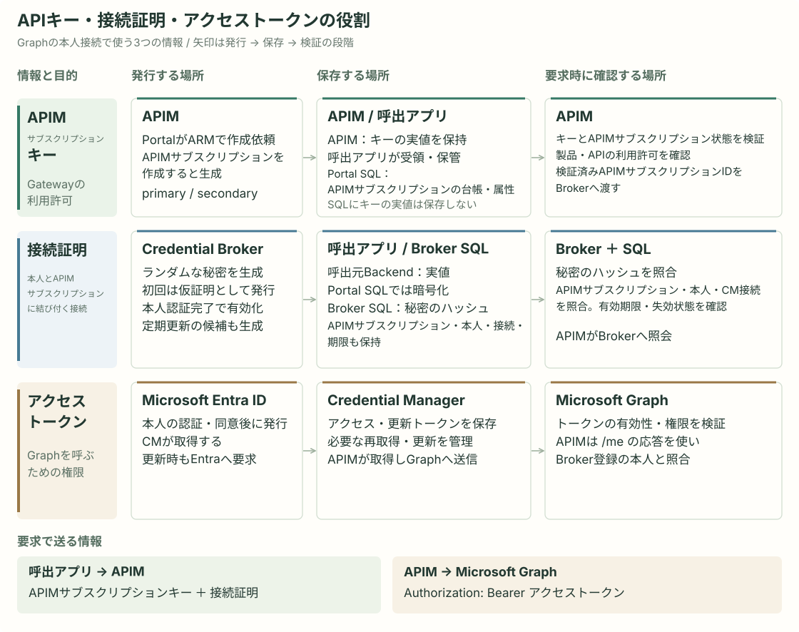
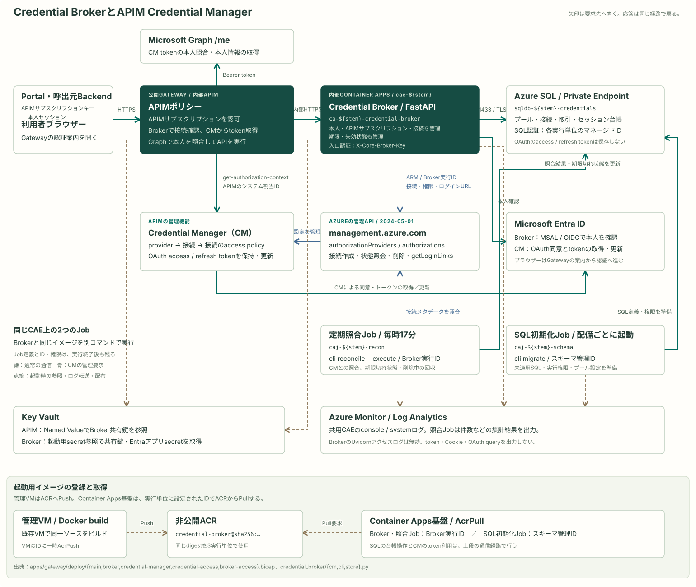
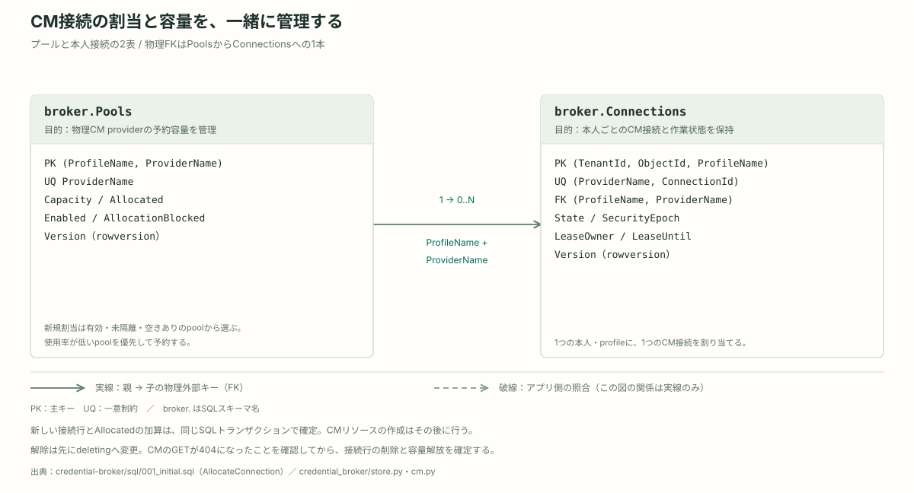
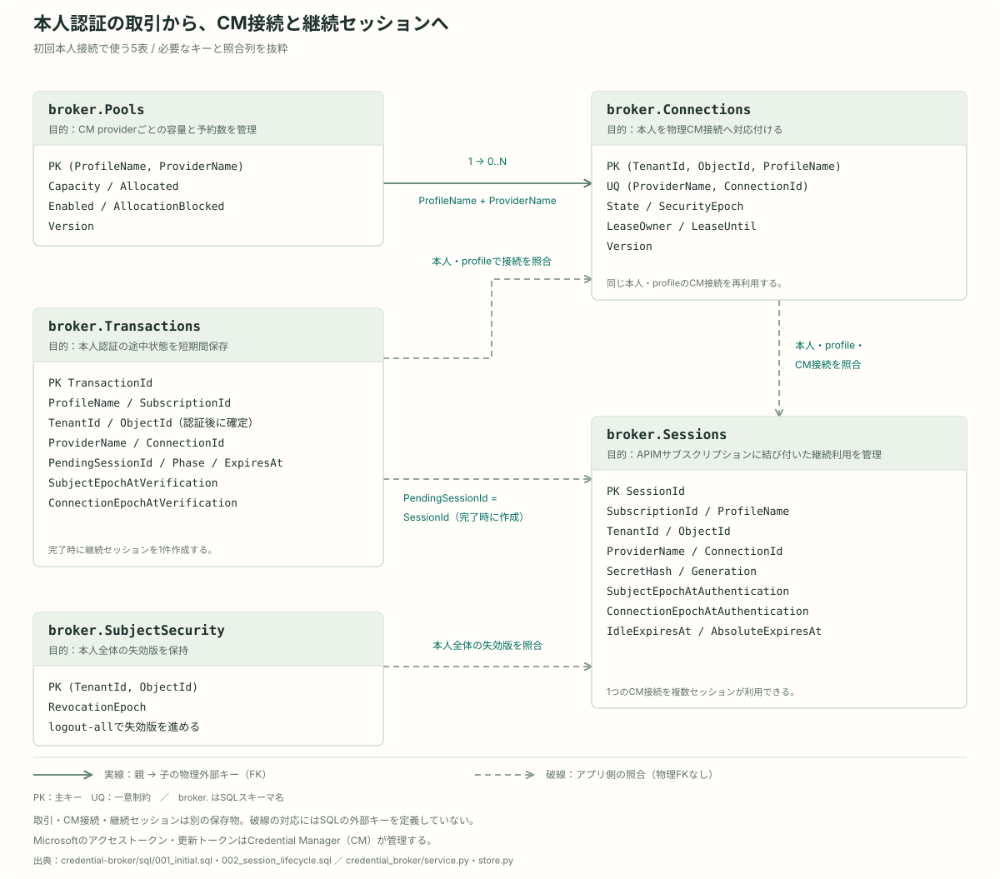
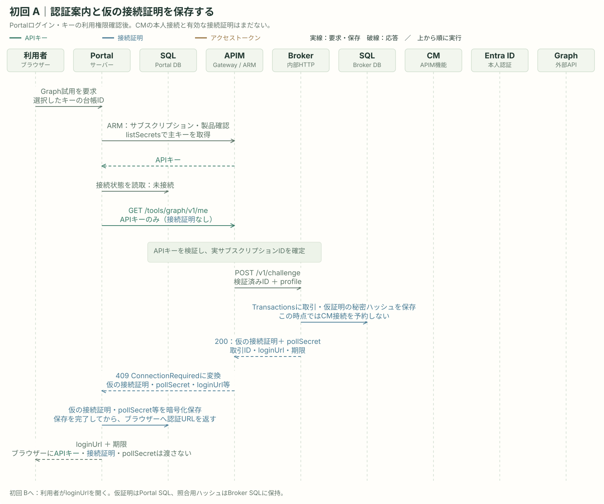
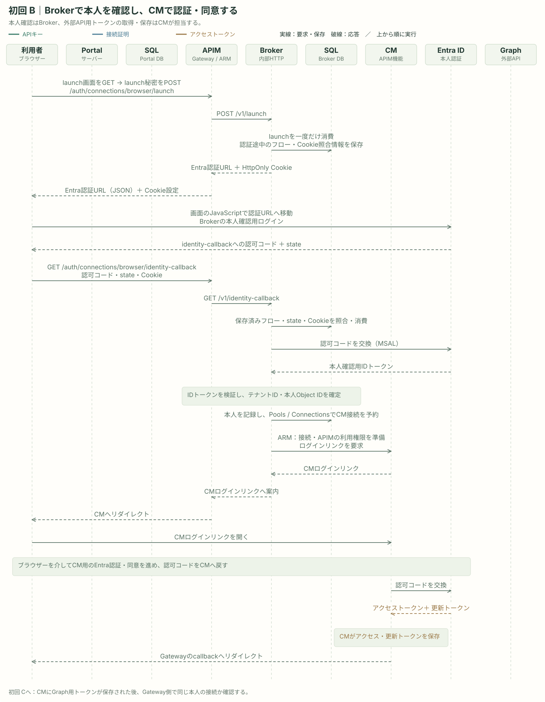
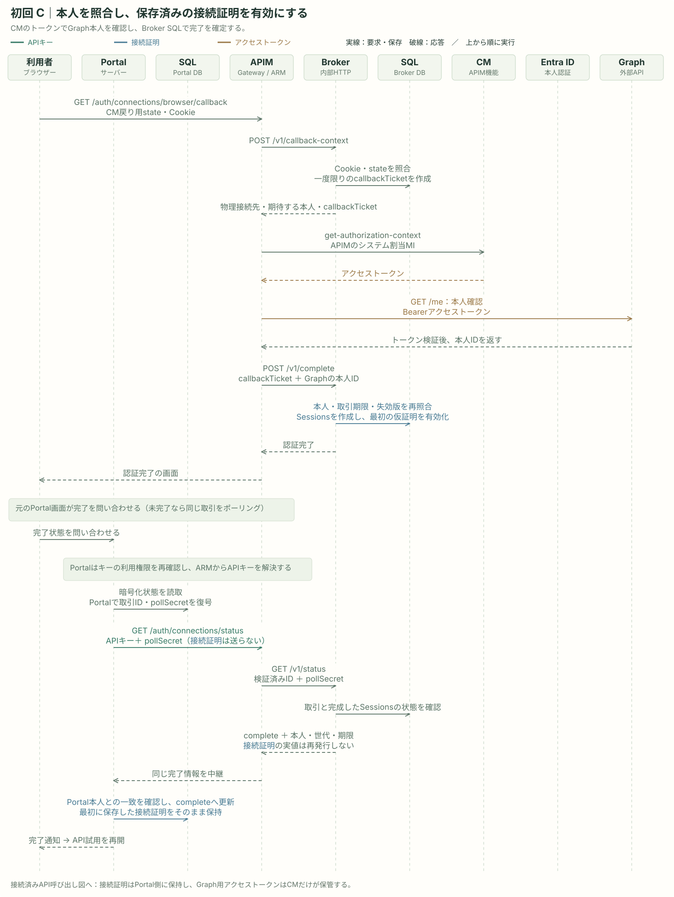
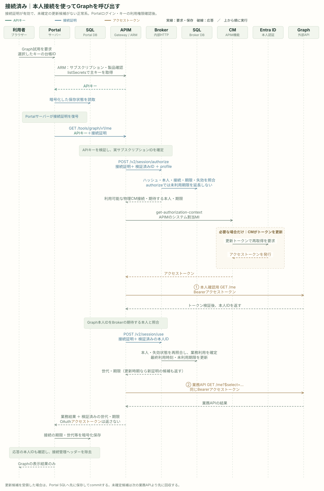
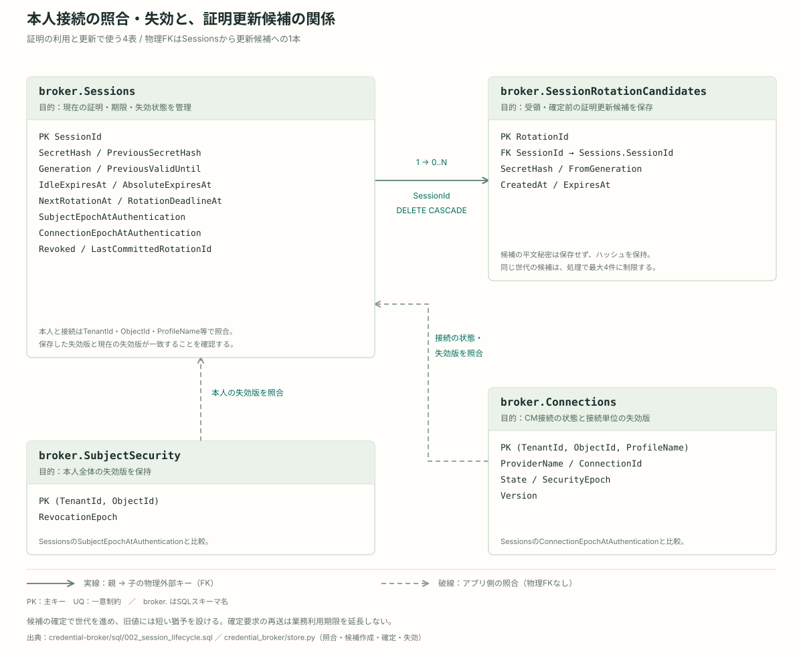
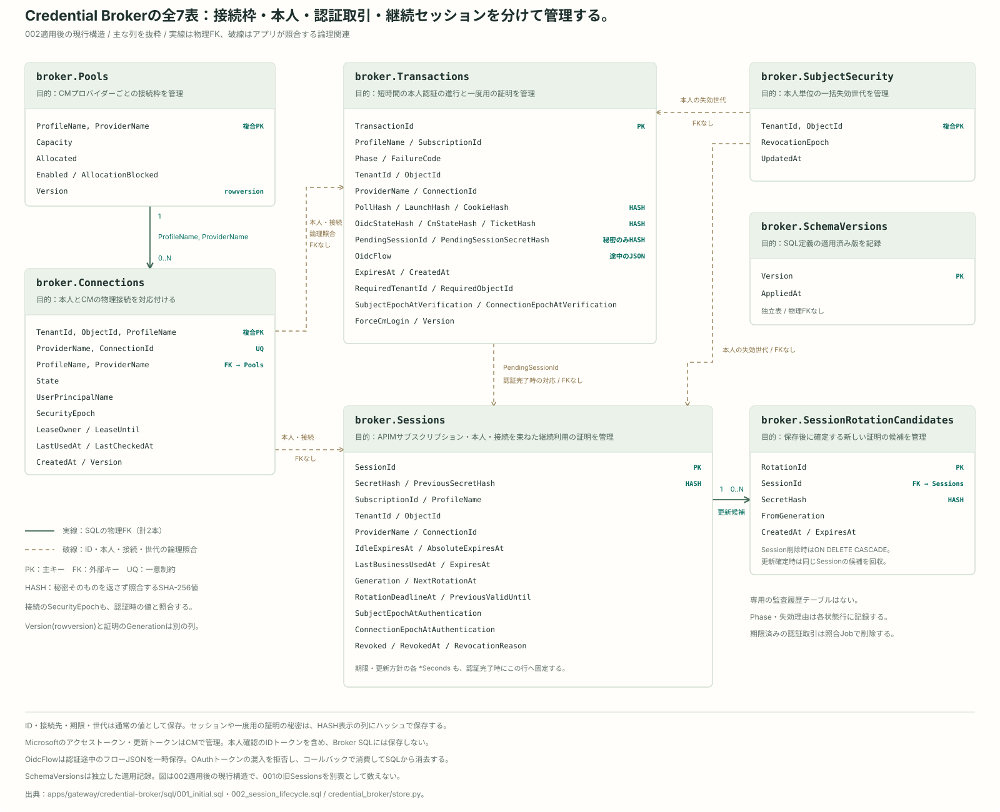

APIM Credential ManagerとCredential Broker
Gatewayから利用者本人のMicrosoft Graphを呼び出すために、外部APIの認証情報と、その接続を使える利用者を管理します。
Credential Managerがすること
Microsoft Graphの「自分の情報」を読むには、本人が認証・同意して得たアクセストークンを、APIの要求に付ける必要があります。トークンには有効期限があるため、継続して利用するには取得後の保管と更新も必要です。
APIM Credential Manager（以下CM）は、外部サービスへのOAuth接続と、そのトークンを管理するAPIMの機能です。本人の認証・同意を接続ごとに受け付け、アクセストークンと、その再取得に使う更新トークンを保持し、必要に応じてトークンを更新します。
APIを呼ぶときは、APIMのポリシーがCMからアクセストークンを取得し、Graphへの要求に付けます。これにより、外部サービスのトークン保管・更新をAPIMの機能に任せられます。
Microsoft仕様：Credential Managerの概要。
egakumiでBrokerを加える理由
egakumiでは、会社・組織に対応するAPIキーでGatewayを利用します。同じAPIキーを複数の利用者が使う場合でも、Graphの本人接続は利用者ごとに分ける必要があります。
たとえば、AさんとBさんが同じAPIキーでGraphの「自分の情報」を呼んでも、Aさんの要求はAさんの接続、Bさんの要求はBさんの接続を使う必要があります。APIキーが表すGatewayの利用許可に、認証した本人とCM接続の対応を加えることが、ここで必要になります。
CMには、接続のトークンを取得できるIDを許可する機能があります。この構成ではAPIMのマネージドID（Azureリソースに付ける実行用ID）を許可します。その上で、APIMを呼ぶ個々の要求について、本人とAPIキーを確認し、どのCM接続を使うかを決める処理をegakumi側で実装します。
Credential Broker（以下Broker）は、この本人・APIMサブスクリプション・CM接続の対応を管理するアプリです。本人を認証して接続を割り当て、以後の要求で同じ接続を使うための「接続証明」を発行します。SQLに対応関係と期限・失効状態を持ち、利用停止や接続解除も管理します。
役割分担

APIキーはAPIMに実値を保持し、配布先の呼出アプリでも管理します。PortalのAPI試用では、要求時にAPIMからキーを取得します。接続証明の実値は呼出元Backendが保持し、Brokerでは秘密のハッシュで照合します。アクセストークンはEntra IDが発行し、CMが取得・保管・更新を担当します。
アクセストークンの有効性と権限を検証する先はGraphです。APIMはそのトークンでGraphの/meを呼び、返された本人IDがBrokerに登録した本人と一致するかを確認します。
図に対応する実装とMicrosoft仕様
APIキーの作成依頼・取得はportal/lib/api-keys/apim.ts、接続証明の生成・照合はcredential_broker/service.pyとstore.py、Portal側の暗号化保存はportal/lib/connection-session/store.tsが担当します。CMトークンの取得とGraph本人照会はpolicies/credential-connection.xmlです。
Microsoft仕様：APIMサブスクリプションとキー、CMのトークン管理、アクセストークンの発行とAPI側の検証。
| 担当 | 管理・実行すること |
|---|---|
| CM：外部サービスの認証情報 | GraphへのOAuth接続と、アクセストークン・更新トークンを保持・更新する。APIMに接続のトークンを提供する。 |
| Broker：本人と利用許可の対応 | 本人とAPIキーに対応するAPIMサブスクリプションを確認し、利用するCM接続をSQLで管理する。接続証明の発行・更新・失効、接続の作成・解除を担当する。 |
| APIMポリシー：要求ごとの実行 | APIキーを検証し、Brokerに接続証明を照会する。CMトークンの本人も確認し、Graphへトークンを付けて送信する。 |
| 呼出アプリ：接続手続きと証明の保持 | 利用者へ認証画面を案内し、APIキーと接続証明をGatewayへ送る。Portalでは証明と認証途中の情報をSQLへ暗号化保存する。 |
CMが外部サービスのトークンを管理し、BrokerとAPIMが、その接続をどの本人・APIキーの要求で使えるかを確認します。両方を組み合わせて、利用者本人としてGraphを呼び出します。
全体の実行構成
CM・Broker・呼出アプリの役割を、APIM、Container App、SQL、2つのJobへ対応付けます。

| 構成要素 | 担当すること |
|---|---|
| APIM / Credential Manager | CMは外部サービスのOAuth接続とトークンを管理するAPIMの機能。APIMポリシーが必要な接続のアクセストークンを取得し、Graphへ付けて送る。 |
| Credential Broker / Container App | 認証した本人と、APIキーに対応するAPIMサブスクリプション・CM接続を結び付ける。接続証明の発行、期限、更新、失効をSQLで管理する。 |
| Broker SQL | sqldb-${stem}-credentials。本人接続の割当、認証途中の状態、継続セッションを保存する。CMのOAuthトークン本文は保存しない。 |
| 呼出アプリ / Portal | APIキーに加えて接続証明をGatewayへ送る。Portalは証明・認証途中の秘密を自身のSQLへ暗号化保存し、ブラウザーへは認証URLを案内する。 |
| schema Job / recon Job | schemaは配備時のSQL準備。reconは毎時17分にCMとSQLを照合し、失効・削除の回収や期限済みデータの整理を行う。 |
現行の graph-profile-v1 は、本人としてGraphへ接続する設定です。Portalへのログインは03章のBetter Auth、この章の本人接続はGraph等を呼ぶための認証です。Portalにログインできるだけで、Graph接続の認証が完了するわけではありません。
フォルダ構造
Brokerは画面を持たないPythonのHTTPサービスです。要求の受付、処理の順序、SQL、外部認証への通信を分け、APIM側のポリシーとは別に配置しています。
- credential-broker/
- credential_broker/：Pythonパッケージ。HTTP受付、接続管理、SQL、Entra・CM通信
- sql/：番号順のテーブル・制約・接続割当処理
- tests/：認証、期限、競合、失効、SQLの動作確認
- Dockerfile / requirements.txt：実行イメージと依存ライブラリ
- apim/
- apis/：公開APIと、そのAPIで利用する本人接続の設定
- policies/：要求ごとの照合・CMトークン取得・ブラウザー認証の中継
- deploy/：CM provider、Container App・Job、ID・権限などのAzure構成
- 呼出アプリ側の証明保存、認証完了の確認、更新確定
以降は、CM設定の準備、本人接続、API利用、更新、解除をそれぞれ一つの節で説明します。機能内の図は必要な表に絞り、全7表のER図は末尾にまとめます。設定値・リソース名はリポジトリの定義に基づき、稼働中Azureから取得した値ではありません。
CMの接続設定と割当
利用者ごとのGraph接続を置く場所と、APIから利用する権限を準備します。
データ構造と保存先
API定義が指定する論理的な接続設定をprofileと呼びます。例は graph-delegated です。profileに、実体となるCM providerを複数対応付け、それぞれを接続の割当先となるプールとして管理します。
| データ・リソース | 目的と関係 |
|---|---|
| CM provider | OAuthの接続先、EntraアプリのClient ID・secret、要求scope、redirect URLを設定する。ARM上の名前は authorizationProviders。 |
| CM connection | provider配下に作る本人ごとのOAuth接続。ARM上の名前は authorizations。接続のリソースを作っただけでは本人の認証・同意は完了しない。 |
| CM access policy | 当該connectionのトークンを利用できるIDを指定する。この実装ではAPIMのシステム割当マネージドID（MI）を許可する。 |
| broker.Pools | profileと物理providerの対応、容量、割当数、新規割当の許可・停止を保存する。 |
| broker.Connections | テナントID＋本人Object ID＋profileから、物理providerとconnection IDを引く。同じ本人・profileの対応を再利用する。 |

CMにはproviderごとの接続数上限があるため、本人接続を複数の物理providerへ分散します。SQLは各プールのCapacityとAllocatedを管理し、同じ本人・profileの接続を重複して作らないようにします。
操作の流れ
- 配備時にOAuth設定とプールを登録する
BicepでCM providerを作り、schema JobでSQLのPoolsを登録・更新する。API定義には論理profileを指定し、本人確認先のGraph URLも設定で固定する。
- 本人確認後に接続の割当先を決める
SQLの
broker.AllocateConnectionが本人＋profileの既存接続を確認する。新規なら、利用可能で空きがあるプールを割当率の低い順に選び、割当数の加算とConnectionsの予約を同じトランザクションで行う。 - BrokerからCMの管理APIを呼ぶ
BrokerのMIでAzure Resource Manager（ARM）のトークンを取得する。対象APIM・providerを固定し、CM接続の存在確認、作成、access policy、ログインリンク、削除を操作する。
CMを操作する専用API
利用しているのはAPIMのARM REST API（api-version=2024-05-01）です。接続配下の操作だけを行い、通常の本人接続のたびにAPIMサービス全体を再配備する処理ではありません。
| 要求 | この実装での使い方 |
|---|---|
GET / PUT …/authorizationProviders/{provider}/authorizations/{connection} | 接続の存在を確認し、ない場合にOAuth2 / AuthorizationCodeの接続を作る。 |
PUT …/accessPolicies/{apimPrincipalId} | APIMのMIに、この接続のトークンを利用する権限を付ける。 |
POST …/getLoginLinks | 本人が認証・同意を進めるCMのログインURLを取得する。戻り先をGatewayのcallbackへ固定する。 |
| DELETE → GET | 接続解除で削除し、GETが404になったことを確認する。SQLの容量解放は確認後。 |
現行配備では、BrokerのMIとAPIMのシステム割当MIに、CM provider単位のARM管理権限を付けています。トークン取得には、これとは別にAPIMのMIをconnectionのaccess policyで許可します。さらにAPIMポリシーとBrokerが「どの本人・APIMサブスクリプションの接続か」を照合します。APIMのMIで読める接続を、誰でも利用できる設定にはしません。
担当ファイル
| 担当ファイル | 実装している処理と目的 |
|---|---|
deploy/credential-manager.bicep | CM providerとOAuth設定、事前定義するconnection・access policyを作る。 |
deploy/credential-access.bicep | CM providerを範囲にAPI Management Service Contributorを付ける。main.bicepからBroker実行MIとAPIM MIへそれぞれ適用する。 |
credential_broker/settings.py | profile・物理プール・本人確認先・公開Gateway URLを読み、起動時に設定を検証する。 |
credential_broker/cm.py | MIでARMへ接続し、接続作成・利用権限・ログインURL取得・削除確認を行う。 |
sql/001_initial.sql | Pools・Connectionsと、重複・容量超過を防ぐAllocateConnectionを定義する。 |
apim/apis/graph-profile-v1.json | Graph /meの公開APIと、利用する論理profileを宣言する。 |
OAuthアプリ、scope、redirect URL、connection配下のaccess policyを確認する。credential-manager.bicep・credential-access.bicepと対応付ける。秘密やトークンは画像に含めない。
Entraアプリと戻り先URL
現行実装は論理providerのClient IDとsecretをBrokerの本人確認とCMのOAuth設定に共用します。Portalのログインも設定によって同じアプリ登録を利用します。アプリ登録の個数ではなく、認証の用途と戻り先を区別してください。
| 用途 | 戻り先 |
|---|---|
| Brokerの本人確認 | https://<gateway-host>/auth/connections/browser/identity-callback |
| CMのOAuth認証 | https://authorization-manager.consent.azure-apim.net/redirect/apim/<apimName>。Entraアプリに登録するCM用のURI。 |
| CM認証後のGateway側の完了処理 | https://<gateway-host>/auth/connections/browser/callback。getLoginLinksへ渡すpostLoginRedirectUrl。 |
| Portalのログイン | /api/auth/callback/microsoft。Better Authが処理する戻り先。 |
Microsoft仕様：Credential Managerの概要（providerあたりの接続数上限を含む）、Authorizationの作成・更新API、ログインリンク取得API。
APIはprofileを指定し、BrokerはSQLの割当情報から実際のCM接続を選びます。接続の作成後、本人認証と同意が必要です。
本人接続の開始
Graphを呼ぶ本人を確認し、その本人が同意したCM接続とAPIキーを対応付けます。
データ構造と保存先
| 保存先 | この機能で持つデータ |
|---|---|
| broker.Transactions | 短期限の認証取引。APIMサブスクリプションID・profile、開始・完了確認用秘密のハッシュ、本人認証の一時情報、期待する本人、処理段階を保存する。 |
| broker.Connections / Pools | 本人確認後にCM接続を予約する。本人が未確認の段階ではプールの容量を予約しない。 |
| broker.Sessions / SubjectSecurity | 取引開始時の仮セッションID・秘密ハッシュはTransactionsに持つ。完了時に独立したSessions行を作り、本人・APIMサブスクリプション・接続と期限を確定する。本人全体の失効版も照合する。 |
| Portal SQL：portalConnectionState | Gatewayのorigin（接続先のscheme＋host）＋Portalログイン本人＋実APIMサブスクリプションID＋profileから索引用ハッシュを作り、仮の接続証明・pollSecret・取引情報を暗号化保存する。Broker SQLとは保存する役割が異なる。 |
| APIM CM | 本人の同意を得た外部APIのアクセストークンと更新トークンを管理する。 |

接続証明は、本人接続を継続利用するためにBrokerが発行する秘密です。現在の形式は cs2。外部APIのOAuthトークンとは別で、APIMサブスクリプションID・profile・本人・CM接続に結び付きます。Brokerは照合用ハッシュを持ち、呼出アプリが送信する証明の実値はアプリ側で保管します。
ハッシュは秘密の実値から計算する照合用の値です。失効版は利用を止める操作で進める整数で、本人全体用と接続単位用があります。認証取引やセッションに保存した版と現在の版が一致するかを確認し、途中で停止された接続を完了・再利用できないようにします。
操作の流れ
PortalのGraph試用を例に、初回の本人接続を3段階に分けて示します。Portalログインと、現在の所属グループ・キー台帳に基づく利用権限確認を済ませた正常系です。
SQLはPortal DBとBroker DBを別の列で示します。APIMの列では、キーを取得するARM管理APIと、APIを受けるGatewayを、メッセージの「ARM」で区別します。図は全体を表示し、「文字を拡大」で横スクロール表示に切り替えられます。「図を大きく表示」から図だけを開くこともできます。
A. 認証案内と仮の接続証明を保存する

B. Brokerで本人を確認し、CMで認証・同意する

C. CMの本人を照合し、接続を完了する

- APIから認証案内を受け、呼出アプリが保存する
接続証明なしでGraph APIを呼ぶと、APIMがBrokerの
/v1/challengeへ検証済みAPIMサブスクリプションIDとprofileを渡す。Brokerは取引、仮の接続証明、loginUrl、pollSecretを返す。Portalは仮証明と秘密をSQLへ保存してから認証URLをブラウザーへ渡す。 - BrokerがEntra IDで本人を確認する
ブラウザーのlaunch画面から開始を確定し、BrokerがMSAL（Microsoftの認証ライブラリ）で本人認証を始める。応答の署名・宛先・発行元・期限と、認証要求との対応を確認してテナントID＋Object IDを確定する。
- 本人に対応するCM接続を準備する
SQLで接続を予約し、BrokerがARM経由でCM接続とAPIMの利用権限を作る。CMログインURLへ案内してGraph接続の認証・同意を進める。既存の正常な接続は再利用できる。
- CMのトークンでも同じ本人であることを確認する
CMからGatewayへ戻ると、APIMがCMトークンを取得して固定のGraph /meを呼ぶ。Graphが返す本人IDをBrokerで確認した本人と突き合わせる。他人のアカウントで同意しても、この接続を完了にしない。
- SQLでセッションを有効にする
Brokerが取引期限、本人・接続の失効版、期待する本人を再確認し、Sessionsを有効にする。PortalはpollSecretで完了を確認し、保存済みの接続証明でAPIを呼ぶ。statusは証明実値を再発行しない。
PortalログインはPortalの利用者を識別します。ここでは、Gatewayを利用する呼出アプリからGraphに接続する本人をBrokerが確認し、さらにCM側のトークンの本人と一致させます。呼出元が申告したメールやconnection IDだけで本人を決めません。
ブラウザー認証の照合と失敗時の扱い
launch用秘密、認証要求と応答の対応を確認するstate、callback用ticketは一度だけ利用します。ブラウザーCookieはSecure・HttpOnly・SameSite=Laxです。期限切れ、別の本人、Cookie不一致、取引の二重利用では完了にしません。
別処理が同じ接続を予約中なら ConnectionBusy、プール満杯なら ConnectionCapacityReached。SQL・Entra・CMの障害は ConnectionUnavailable として扱い、接続成功へ進めません。認証取引の既定期限は5分、認証開始はAPIMサブスクリプションごとに1分10回までで、超過は429とRetry-Afterを返します。
担当ファイル
| 担当ファイル | 実装している処理と目的 |
|---|---|
credential_broker/service.py | 取引開始、Entra本人確認、接続予約、CM認証、完了確定の順序を管理する。 |
credential_broker/identity.py | MSALで認証を開始し、認可コードを交換して本人を検証する。 |
credential_broker/store.py | 取引の一度限りの消費、本人・接続の対応と失効版をSQLで照合する。 |
policies/credential-login/launch.xml | ブラウザー認証の開始ページを返す。URLの秘密を取り出し、履歴から消してPOSTへ渡す。 |
policies/credential-login/launch-post.xml | 開始確定をBrokerへ中継し、Entra認証へ案内する。 |
policies/credential-login/identity-callback.xml | Entraの認証応答をBrokerへ中継する。 |
policies/credential-login/callback.xml | CMトークンで本人を照合し、Brokerへ認証完了を通知する。 |
portal/lib/connection-session/client.ts | 認証案内を先に保存し、認証完了の状態を確認してからAPI利用を再開する。 |
portal/lib/connection-session/store.ts | 本人・APIMサブスクリプション・profileに対応する状態をSQLへ保存し、短いリースで同時更新を制御する。 |
portal/lib/connection-session/crypto.ts | 保存状態を用途別の鍵で暗号化し、別の本人・APIMサブスクリプションの行へ移しても使えないようにする。 |
portal/sql/010_connection_sessions.sql | portalConnectionStateの暗号文、版数、リースを定義する。 |
Broker SQLには証明・poll等の秘密のハッシュを保存しますが、すべての列がハッシュではありません。認証途中のMSALフローも一時保存し、本人確認時に消去します。OAuthトークンや秘密をアクセスログへ記録しない設定です。
認証済みの本人・CM接続・APIMサブスクリプションを結び付けた継続セッションがSQLに残り、呼出アプリは保存した接続証明を送ってAPIを利用できます。
本人接続を使ったAPI呼び出し
APIキーだけでは区別できない本人を確認し、その人のGraphデータだけを呼び出します。
データ構造と保存先
| 確認するもの | データの役割 |
|---|---|
| APIキー / APIMサブスクリプションID | Gatewayの利用許可。APIMが検証したAPIMサブスクリプションIDを使い、利用者が送ったAPIMサブスクリプションIDヘッダーは信用しない。 |
| X-Core-Connection-Session | 呼出アプリが保管した接続証明。Sessionsのハッシュ・APIMサブスクリプション・profile・期限・失効版と照合する。 |
| Connections / SubjectSecurity | 本人と物理CM接続の対応、接続・本人全体の失効版を確認する。 |
| CMトークン / Graph本人ID | APIMがCMから得たトークンでGraph /meを呼び、接続に登録された本人と一致するか確認する。 |
操作の流れ
接続証明が有効で、未確定の更新候補がない場合の流れです。Portalログインとキーの利用権限を確認してから、ARMでAPIキーを取得し、Portal SQLの接続証明と合わせてGatewayへ送ります。
接続済みのAPI呼び出し

保存済みの未確定候補があれば、業務APIを送る前にcommitを回収します。この要求で新しい候補を受け取った場合は、候補をPortal SQLへ先に保存し、APIキー・接続証明と候補を付けてAPIMのcommit APIを呼びます。APIMからBrokerへ中継し、Broker SQLで証明の世代を切り替え、Portalも保存状態を更新します。業務成功後のcommit失敗で、成功済み業務を再送しません。接続証明の更新手順へ
- APIMサブスクリプションと接続証明を照合する
APIMから
/v2/session/authorizeを呼ぶ。BrokerはSQLでAPIMサブスクリプション・profile・証明・期限・失効を確認する。APIMは返された物理provider・connection・本人確認先も、配備済み設定と照合する。 - CMからトークンを取得する
APIMの
get-authorization-contextポリシーが、APIMのMIでCM接続を読み、アクセストークンを取得する。Brokerからトークン本文を受け取る方式ではない。 - 本人を確認し、Brokerで利用を確定する
トークンで固定のGraph /meを呼び、本人IDを確認する。その後
/v2/session/useでSQLを再照合し、外部照会中に接続や本人が失効していないかを確認する。ここで最終業務利用時刻・未利用期限を更新する。 - 外部APIへ送信する
APIMはBroker用ヘッダーと接続証明を除き、CMのアクセストークンをBearerに設定して業務APIへ送る。呼出アプリには検証済みの期限・世代・更新情報を返し、OAuthトークンは返さない。
authorizeや状態確認だけでは未利用期限を延ばしません。CMトークンの本人を確認した後、useで延長します。下流の業務APIへ送る直前の処理なので、「業務APIが成功した場合だけ延長する」という実装ではありません。
業務要求ごとのトークン取得・必要な更新はCMが担当します。接続の作成・削除を行うARM管理APIは、認証開始や接続解除、定期照合等でBrokerが呼びます。通常のAPI利用ごとに、接続をPUTし直す処理ではありません。CMトークン取得が失敗した場合の状態確認ではARMを使います。
再認証と障害を分ける
| 状態 | 返す結果と対応 |
|---|---|
| 接続証明がない・接続の認証が明示的に失効 | 409で認証案内。再認証は元と同じ本人へ結び付ける。 |
| 偽の証明・別のAPIMサブスクリプション・別の本人 | 403。別の接続へ切り替えて通さない。 |
| CMのトークン取得に失敗 | BrokerがCMの状態を確認。明示的な未認証・失効だけ再認証へ進める。Connectedや不明な障害は503。 |
| 下流のGraphが401 / 403 | 401は再認証案内へ。権限不足の403は403のまま。追加の認証条件を要求するinsufficient_claimsも403として扱い、認証を繰り返さない。 |
担当ファイル
| 担当ファイル | 実装している処理と目的 |
|---|---|
policies/credential-connection.xml | APIMサブスクリプションと接続を解決し、CMトークン取得・本人一致を確認する。 |
policies/credential-session-use.xml | Brokerで最終利用を確定し、返された期限・更新候補が正しいか確認する。 |
policies/credential-challenge.xml | 認証が必要なときに取引を開始し、認証URL・仮証明・完了確認の情報を返す。 |
policies/credential-connection-outbound.xml | 下流401・403を分類し、期限・証明更新の応答を返す。 |
credential_broker/service.py | authorize、use、CM状態確認の判断を行う。 |
credential_broker/store.py | 証明・本人・接続・APIMサブスクリプションの対応を照合し、利用時刻をトランザクションで更新する。 |
credential-connection、credential-session-useと、get-authorization-contextのprovider・connection指定を確認する。API定義だけでなく配備後のポリシーと照合する。
Microsoft仕様：get-authorization-contextポリシー。APIMがCMから取得したAccessTokenを下流のAuthorizationへ設定します。
APIMサブスクリプションの利用許可と外部APIの本人が確認された要求だけがGraphへ進みます。Brokerの接続証明とCMのOAuthトークンは、送信先を分けて扱います。
接続証明の期限と更新
外部サービスへの同意を毎回求めずに接続を継続し、接続証明を期限付きで更新します。
データ構造と保存先
CMが行うOAuthトークンの再取得と、Brokerが行う接続証明の更新は別です。ここでは、呼出アプリに渡した証明を定期的に入れ替え、使われない接続を期限で止める処理を扱います。
| テーブル | 期限・更新に使うデータ |
|---|---|
| broker.Sessions | 現行・旧証明のハッシュ、世代、本人認証時刻、最終業務利用、未利用期限、絶対期限、次回更新・更新確定期限を持つ。 |
| broker.SessionRotationCandidates | 未確定の更新候補。候補ID、新証明のハッシュ、元の世代、候補期限を持ち、SessionIdでSessionsを参照する。 |
| SubjectSecurity / Connections | 本人全体と接続の失効版。候補作成後に失効しても、commitで接続を復活させない。 |
| Portal SQL：portalConnectionState | 現行証明と受領した候補を暗号化保存する。Brokerへのcommit要求より先に新候補を保存する。 |

操作の流れ
- 業務利用時に更新候補を作る
更新時刻を過ぎたuseで候補を作る。APIMが応答の整合を確認して、更新候補と期限を呼出アプリへ返す。まだ現行証明は切り替えない。
- 候補を保存してから確定する
Portalは候補をSQLへ保存し、
POST /auth/connections/session/commitへ要求する。Brokerが現行証明、候補、元の世代、期限、失効版を照合する。 - 世代を進め、旧証明に短い猶予を設ける
SQLで新証明へ切り替える。同じcommitの再送は同じ結果を返し、猶予や未利用期限を再送のたびに延ばさない。並行処理は世代と候補で競合を検出する。
- 確定が遅れた要求を止める
更新の確定期限を過ぎたら、業務を実行する前に
SessionUpdateRequired/ 409で更新を要求する。Microsoftへの再認証とは分けて処理する。
業務APIが成功した後にcommit通信が失敗した場合は、保存済み候補からcommitを回収します。証明更新の失敗を理由に、成功済みの業務APIを再送しません。
既定の期限と、既存セッションへの適用
| 項目 | リポジトリの既定値・意味 |
|---|---|
| 未利用期限 / 絶対期限 | 7日 / 認証完了から30日。本人確認済みの業務利用で未利用期限を延ばすが、絶対期限は超えない。 |
| 更新間隔 / 旧証明の猶予 | 24時間 / 5分。切替前後の並行要求を短い期間だけ受け付ける。 |
| 更新確定までの期間 / 候補期限 | 10分 / 10分。候補が古い場合や他候補が先に確定した場合は、同じ新証明として採用しない。 |
| 設定を変更した場合 | 認証完了時の期限方針をSessionsに保存する。新しい既定値で既存セッションの絶対期限を延長しない。status、authorize、commit、healthでは未利用期限を延ばさない。 |
担当ファイル
| 担当ファイル | 実装している処理と目的 |
|---|---|
credential_broker/service.py | use時に候補秘密を生成し、更新情報とcommitの応答を組み立てる。 |
credential_broker/store.py | 候補作成、世代比較、期限、冪等なcommit、旧証明の猶予をSQLで管理する。 |
sql/002_session_lifecycle.sql | Sessionsの期限・世代と、更新候補・本人全体の失効版を定義する。 |
credential_broker/settings.py | 期限の既定値と整合条件を検証し、認証完了時に保存する方針を返す。 |
policies/credential-login/session-commit.xml | 公開commit APIの入力を検証し、APIMサブスクリプションIDと共にBrokerへ中継する。 |
portal/lib/connection-session/client.ts | 候補の先行保存、commit、応答消失や競合後の回収を行う。 |
呼出アプリが新証明を保存したことを確認してから世代が切り替わります。未利用期限・絶対期限・失効版による停止は、更新候補があっても回避できません。
セッションの終了と接続解除
一つの利用だけを止める場合と、本人の利用全体・外部接続を止める場合を分けて管理します。
データ構造と保存先
利用を止める範囲は、セッション1つ、本人全体、本人とprofileのCM接続の3種類です。失効版はSQLの整数で、本人・接続の状態が変わると値を進めます。セッションや認証途中の取引が保存した値と一致しなければ利用・完了を拒否します。
| 操作 | SQLで変更する範囲 | CM接続 |
|---|---|---|
| logout | 提示したSessionsを失効させ、当該セッションの更新候補を削除する。 | 保持する。 |
| logout-all | SubjectSecurityの本人全体の失効版を進め、同じテナントID＋Object IDの全profile・全APIMサブスクリプションのセッションを止める。認証途中の取引も完了時の照合で拒否する。 | 保持する。 |
| disconnect | 当該本人＋profileのConnectionsを削除中にして接続の失効版を進め、該当するセッション・未完了取引・更新候補を失効させる。 | 削除を要求する。 |
操作の流れ
- 要求元のAPIMサブスクリプションと証明を検証する
公開APIはそれぞれ
/auth/connections/logout、/logout-all、/disconnect。APIMが検証したAPIMサブスクリプションIDと接続証明をBrokerへ渡す。 - 先にSQLで利用を止める
logoutは1セッション、logout-allは本人全体、disconnectは当該本人接続を失効させる。認証中や更新中でも古い失効版の状態を有効に戻さない。
- disconnectではCMの削除を確認する
BrokerがARMへDELETEし、GETが404になるまで接続割当を保持する。削除が未完了なら202 /
disconnect_pendingとし、SQLは削除中のまま残す。 - 削除確認後に割当を解放する
CM接続が存在しないことを確認して、SQLの接続割当を削除しPoolsの使用数を減らす。通信障害で削除できなかった接続は、定期Jobが再試行する。
担当ファイル
| 担当ファイル | 実装している処理と目的 |
|---|---|
credential_broker/service.py | 単一失効、本人全失効、CM接続解除の処理順を管理する。 |
credential_broker/store.py | 失効版の更新、セッションと認証取引の無効化、削除中状態と容量解放を行う。 |
credential_broker/cm.py | CM接続を削除し、GET404による削除完了を確認する。 |
policies/credential-login/logout.xml | 現セッションの終了要求をBrokerの/v1/logoutへ渡す。 |
policies/credential-login/logout-all.xml | 本人全体の終了要求をBrokerの/v2/session/logout-allへ渡す。 |
policies/credential-login/disconnect.xml | 接続解除要求をBrokerの/v2/session/disconnectへ渡す。 |
disconnectはegakumiが利用するCM接続を削除する操作です。MicrosoftのEntraアプリに対する同意そのものを取り消す処理は、この要求には含まれません。
失効はCMへの通信結果を待たずSQLで反映します。CMの削除が未完了でも利用は再開せず、削除確認が済むまで容量を解放しません。
CMとの照合と期限済みデータの整理
CM側の変更や、解除途中に起きた通信障害をSQLへ反映し、使えない接続と残った処理を回収します。
データ構造と保存先
| データ | 照合・整理する内容 |
|---|---|
| CM provider配下のconnection一覧 | 全ページを読み終えてからSQLと比較する。取得失敗や不正な継続URLでは、存在しないと断定しない。 |
| Connections / Sessions / Transactions | CM側の削除・切断を観測して利用を止める。既に削除中の接続は解除処理を再試行する。 |
| Pools.AllocationBlocked | SQLにないCM接続を見つけたプールは、新規割当を停止する。既存の本人対応を勝手に付け替えない。 |
| 期限済みのセッション・取引 | 期限済みTransactionsを削除し、期限を24時間過ぎたSessions行を削除する。紐づく更新候補はFKのCASCADEで削除する。失効しただけでは即削除しない。 |
操作の流れ
- 毎時17分にJobを起動する
caj-${stem}-reconがcredential_broker.cli reconcile --executeを実行する。常駐アプリと同じイメージ、Broker実行用MIを使う。 - 期限済みデータをまとめて整理する
SQL時刻を使い、上限件数を設けて繰り返し処理する。期限済みセッションは同じ本人への再認証との照合用に24時間保持した後、行ごと削除する。生存セッションの更新候補はcommit・失効時や、更新時刻を過ぎたuseで回収する。
- CMを全件読み、SQLと照合する
固定したproviderの一覧を読み、正常、未存在、明示的な未認証・切断、不明に分ける。正常な対応は書き換えず、明示的に使えなくなった接続を未検証状態へ戻して関連セッションを止める。
- 利用者が解除済みの接続を回収する
SQLが削除中の接続だけCM削除を再試行する。GET404を確認してからSQLの割当・使用数を解放する。単に一覧にない接続や、持ち主不明のCM接続を同じ扱いで削除しない。
- SQLにないCM接続があれば新規割当を止める
同時ログインの直後か再確認した上で、プールのAllocationBlockedを立てる。集計結果をログに出し、基盤管理者がCMとSQLを照合する。
CM一覧が途中で失敗した場合、未知のError、API応答の不整合は「不明」です。本人が失効したと断定して切断しません。Jobの結果にはunknown・conflicts・poolsQuarantined等の件数を残し、トークンや本人の表示名は出力しません。
CM接続の未存在・切断を観測しても、未検証状態へ戻すだけでPools.Allocatedは減らしません。容量を解放するのは、解除要求で削除中になった接続について、CMのGET404を確認した後です。
担当ファイル
| 担当ファイル | 実装している処理と目的 |
|---|---|
deploy/broker.bicep | recon Jobの時刻、実行時間上限1800秒、自動再試行0、並列1を定義する。 |
credential_broker/cli.py | CM全件取得、照合、削除再試行、未対応接続の検出、期限整理、集計を行う。--executeなしは更新しない確認用の実行。 |
credential_broker/cm.py | CMメタデータを、接続済み・再認証が必要・利用可否不明に分類する。 |
credential_broker/store.py | 版を照合して観測結果を反映し、利用停止・期限整理・プールの新規割当停止を行う。 |
毎時17分の起動、終了状態、unknown・missing・disconnected・poolsQuarantinedの集計を確認する。正常終了だけで、すべての接続が正常とは判定しない。
明示的に使えない接続を止め、解除要求済みの接続を回収します。不明なCM状態は利用可と決めず、割当が不明なプールは新規利用を止めて調査につなげます。
BrokerとJobの配備
同じアプリの版・SQL構造・権限を揃え、Brokerの常駐処理と2つのJobを動かします。
データ構造と保存先
| 実行単位・保存先 | 構成と権限 |
|---|---|
| ca-${stem}-credential-broker | FastAPI常駐アプリ。内部Container Apps環境でHTTPSを受け、コンテナの8000番へ渡す。SQL、Entra、ARMへ接続する。 |
| caj-${stem}-schema | 手動実行のSQL準備Job。SQL管理用MIで未適用の定義を適用し、実行用MIのSQLユーザー・権限とプールを準備する。 |
| caj-${stem}-recon | 定期照合Job。常駐アプリと同じ実行用MI。3つの実行単位は同じACRイメージのdigestを使う。 |
| Azure SQL | sqldb-${stem}-credentials。Entra認証で接続。実行用MIはdb_datareader・db_datawriterとAllocateConnectionの実行権限を持つ。 |
| Key Vault / ACR / Log Analytics | Broker共有鍵・認証アプリsecret、起動用イメージ、実行ログ。ACRから各実行単位へのイメージ取得はSQLを経由しない。 |
| broker.SchemaVersions | SQLの適用済み版を記録する。現行は001・002の2版。 |
通信経路とIDの割り当て
| 通信・実行単位 | 経路・認証と権限 |
|---|---|
| APIM → Broker | 内部HTTPS。共有鍵と検証済みAPIMサブスクリプションIDで内部要求を照合する。Brokerのコンテナは8000番で待ち受ける。 |
| Broker → SQL | Private EndpointへのTLS / TCP 1433。Broker実行用MIのEntra認証。Client IDをSQLユーザーのSIDに使用する。 |
| Broker → ARM | HTTPS。実行用MIに、各CM providerを範囲とするAPI Management Service Contributor。Azure RBACではprincipalIdを指定する。 |
| APIM → CM | APIMのシステム割当MIをconnectionのaccess policyで許可する。同MIにはprovider単位のARM管理権限も付く。閉域APIMからCM機能へ到達するAzureConnectorsの443通信も基盤の許可対象。 |
| Broker → Entra / APIM → Graph | HTTPS。前者はMSALで本人確認、後者はCMの本人トークンで本人照会と業務APIを実行する。 |
| 実行用MI | id-${stem}-credential-broker。SQL・CM管理に加え、Key Vault Secrets UserとACRのAcrPullを持つ。 |
| schema用MI | id-${stem}-credential-schema。共用SQLサーバーのEntra管理者とAcrPull。schema JobはCM・Key Vaultへ接続しない。 |
| recon Job | 実行用MIでSQLとARMを利用する。Broker共有鍵やOIDC用secretは渡さない。 |
操作の流れ
- 管理VMでイメージをビルドし、ACRへ登録する
Gateway配備スクリプトがCM設定、DB、ID・権限、秘密を準備する。実行イメージをdigestで固定し、schemaとアプリ・reconで揃える。
- schema Jobを起動し、未適用のSQLを適用する
配備のたびにJobを利用するが、SchemaVersionsにある版のSQLは再実行しない。002は初回適用で旧セッション構造を置き換えるため、通常の再配備で繰り返さない。既存の本人接続割当は保持する。
- SQL権限とプール設定を更新する
実行用MIのClient IDをSQLユーザーのSIDに使う。設定から外れたプールは新規割当を無効化するが、既存対応は残す。既存使用数を下回る容量変更は拒否し、隔離中のAllocationBlockedも自動解除しない。
- schemaの成功後にアプリと定期Jobを更新する
アプリ起動時に設定とSQL準備を確認し、不足時は起動を失敗させる。SQLの利用不可をメモリー内保存で代替しない。
SQLの準備と設定・権限の反映に、次回の配備でも使います。実行コンテナは終了し、Jobの定義・MI・権限は残ります。アプリの通常再起動や利用者のログインでschema Jobは動きません。
担当ファイル
| 担当ファイル | 実装している処理と目的 |
|---|---|
scripts/deploy_gateway.py | Gateway更新の起点。--executeで配備を実行する。 |
deploy/broker_deployment.py | schema Jobの成功と、Brokerの正常リビジョンを待機する。 |
deploy/main.bicep | CM・Broker等の配備対象と設定、公開URLを組み合わせる。 |
deploy/broker.bicep | 常駐アプリ、手動schema Job、定期recon Job、イメージ、環境変数を定義する。 |
deploy/identity.bicep | Broker実行用MIを作る。schema用MIはCoreの既存リソースを参照する。 |
deploy/broker-access.bicep | 実行用MIへKey Vaultの秘密読取権限、実行用・schema用MIへACRのAcrPullを付ける。 |
credential_broker/cli.py | 未適用SQLの判定、SQLユーザー・権限、プール設定の適用を行う。 |
credential_broker/app.py | HTTPの入口を作り、起動時の設定・SQL準備確認とヘルスチェックを行う。 |
credential-broker/Dockerfile | PythonとSQL接続ライブラリを含む共通イメージを作り、アクセスログを出さずに8000番で起動する。 |
scripts/deployment/helpers/credential_pools.py | 論理profileから物理provider群への対応とBroker設定を組み立てる。 |
scripts/deployment/helpers/credential_image.py | 管理VMでのイメージ作成、ACRへの一時Push権限と回収、イメージの再利用を行う。 |
イメージdigest、MI、環境変数、Key Vault参照、Jobのトリガーと実行履歴を確認する。broker.bicepのingress設定だけで判断せず、Container Apps環境が内部構成であることも確認する。
手動JobでSQLの準備が済んだ後に、常駐Brokerと定期照合が同じ版で稼働します。再配備は既存の接続割当と適用済みSQLを保持して進みます。
公開APIと保守時の確認箇所
利用者に見える入口から、Broker・SQL・CMのどこを確認するかを対応付けます。
Brokerへの直接のHTTP要求は内部通信です。/healthを除き、APIMとBrokerが持つ専用共有鍵 X-Core-Broker-Key を確認します。APIMが検証済みAPIMサブスクリプションIDを上書きし、Brokerは本文とヘッダーのAPIMサブスクリプションIDも照合します。外部の呼出元が本人・APIMサブスクリプション・物理接続を任意に指定するAPIではありません。
データ構造と保存先
| 公開経路（APIM） | Broker内部の受付と役割 |
|---|---|
| POST /auth/connections/start | POST /v1/start。呼出アプリから認証を明示的に開始。業務API内からの案内は/v1/challenge。 |
| GET / POST /auth/connections/browser/launch | GETはAPIMが開始ページを返す。POSTは/v1/launchで取引を消費し、Entra認証を開始。 |
| GET /auth/connections/browser/identity-callback | GET /v1/identity-callback。Entra本人確認の応答。 |
| GET /auth/connections/browser/callback | POST /v1/callback-context → APIMで本人照合 → POST /v1/complete。CM認証の完了。 |
| GET /auth/connections/status | GET /v1/status。呼出アプリから取引の完了確認。 |
| 業務API内の処理 | POST /v2/session/authorize → POST /v2/session/use。必要時は/v2/connection/status。 |
| POST /auth/connections/session/commit | POST /v2/session/commit。接続証明の更新確定。 |
| POST /auth/connections/logout・logout-all・disconnect | 単一終了は/v1/logout、本人全終了・接続解除は/v2/session/logout-all・disconnect。 |
内部パスの/v1は現行の認証開始・ブラウザー処理でも使っています。接続証明の形式・更新処理がv2でも、すべての内部URLを/v2へ置き換える構成ではありません。ブラウザー用APIはAPIMサブスクリプションキーを要求せず、短期限の取引秘密・state・Cookieで照合します。それ以外の公開認証APIはAPIMサブスクリプションキーを要求します。
操作の流れ
| 変更・調査する内容 | 一緒に確認する箇所 |
|---|---|
| Graphの権限・接続先 | APIのcredentialConnection、profile設定、CM providerのscope、EntraアプリのAPI権限・redirect URI、本人確認先。 |
| 本人接続が完了しない | 取引PhaseとFailureCode、Entra本人とCMトークン本人の一致、Cookie・期限、CM接続状態、SQLの失効版。 |
| APIが409 / 403 / 503を返す | 認証が必要なのか、別のAPIMサブスクリプション・本人なのか、CM・SQL等の障害かを区別。CMトークン取得失敗をすべて再認証へ変換しない。 |
| 容量不足・新規割当停止 | PoolsのCapacity・Allocated・Enabled・AllocationBlockedと、CM一覧・Connectionsの対応。プール隔離を人数だけ見て解除しない。 |
| SQL変更・期限変更 | sql、store.py、settings.py、cli.py、APIMの期限応答、呼出アプリの保存・commit処理まで確認。 |
担当ファイル
| 担当ファイル | 実装している処理と目的 |
|---|---|
apim/api-publication.bicep | 公開認証API、operation、各ポリシーの関連付けを定義する。 |
credential_broker/app.py | 内部ルート、共有鍵、本文項目・重複・サイズ、APIMサブスクリプションIDの検証と固定エラー応答。 |
portal/lib/graph-tool-server.ts | PortalのGraph試用を接続セッションクライアントにつなぎ、保存済み証明でGatewayを呼ぶ。 |
tests/test_broker_service.py | 本人接続、期限、利用、更新、失効等の判断を確認する。 |
tests/test_broker_identity_cm.py | Entraの署名・state等の検証とCM通信の扱いを確認する。 |
tests/test_broker_http.py | HTTPの入力制限、共有鍵、APIMサブスクリプションIDの境界を確認する。 |
tests/test_broker_cli.py | 配備時のSQL準備、CMの全件照合と削除回収を確認する。 |
tests/test_session_sql.py | 専用の実SQLで期限境界、更新競合、失効、ロックを確認する。 |
Brokerには専用の監査履歴テーブルはありません。TransactionsのPhase・FailureCodeやSessionsの失効理由は現在の処理状態です。期限済みデータは整理されるため、永続監査の代わりにはなりません。調査にはJobの集計・実行ログと合わせて使い、証明・Cookie・OAuth応答はログに出しません。
単体テストはEntra・CMへ接続せず、実SQLテストは専用DBを使います。Azure上のMI権限、APIMポリシー、Microsoftサインインは配備後に確認します。この資料の作成時に実機認証を実行したという意味ではありません。
変更する機能の公開入口、Brokerの判断、SQL、CM設定、呼出アプリの保存処理を同じ範囲で確認できます。
全体ER図と保存範囲
各機能で使ったテーブルをまとめ、CMや呼出アプリと何を分担して保存しているかを確認します。

| テーブル | 保存目的 |
|---|---|
| broker.Pools | profileごとのCM provider、容量、割当数、新規割当の可否。 |
| broker.Connections | 本人＋profileとCM接続の対応、予約・認証状態・削除中状態、接続の失効版。 |
| broker.Transactions | 認証開始から完了までの短期限の取引と、一度限りの照合情報。 |
| broker.Sessions | APIMサブスクリプションに結び付く継続セッション、証明ハッシュ、期限、世代、失効。 |
| broker.SessionRotationCandidates | 呼出アプリが受け取り、まだ確定していない接続証明の更新候補。 |
| broker.SubjectSecurity | テナントID＋Object IDで、本人全体を止める失効版。 |
| broker.SchemaVersions | SQL定義の適用済み版。 |
物理FKは、ConnectionsからPoolsと、SessionRotationCandidatesからSessionsの2本です。後者はセッション削除時に候補も削除します。SessionsやTransactionsの本人・接続の対応はSQLのFKではなく、store.pyのトランザクション内で照合します。
CM・Broker・呼出アプリの保存範囲
| 保存先 | 持つ情報 |
|---|---|
| APIM / CM | 外部サービスのOAuth接続、アクセストークン・更新トークン、APIM MIのaccess policy。 |
| Broker SQL / 全7表 | 本人・APIMサブスクリプション・profile・物理接続の対応、認証途中の状態、証明ハッシュ、期限・失効・更新候補。 |
| Portal SQL / portalConnectionState | 呼出アプリとして保持する証明実値・pollSecret・取引・更新候補の暗号文と、版・リース。 |
APIキーはGatewayの利用許可、接続証明は本人接続を継続利用する秘密、CMトークンはGraph等の外部APIを呼ぶ資格情報です。どれか一つだけで残りを代用せず、APIM・Broker・呼出アプリがそれぞれの範囲を照合します。
定義ファイル：001_initial.sql、002_session_lifecycle.sql。利用側の保存定義は Portalの010_connection_sessions.sql。